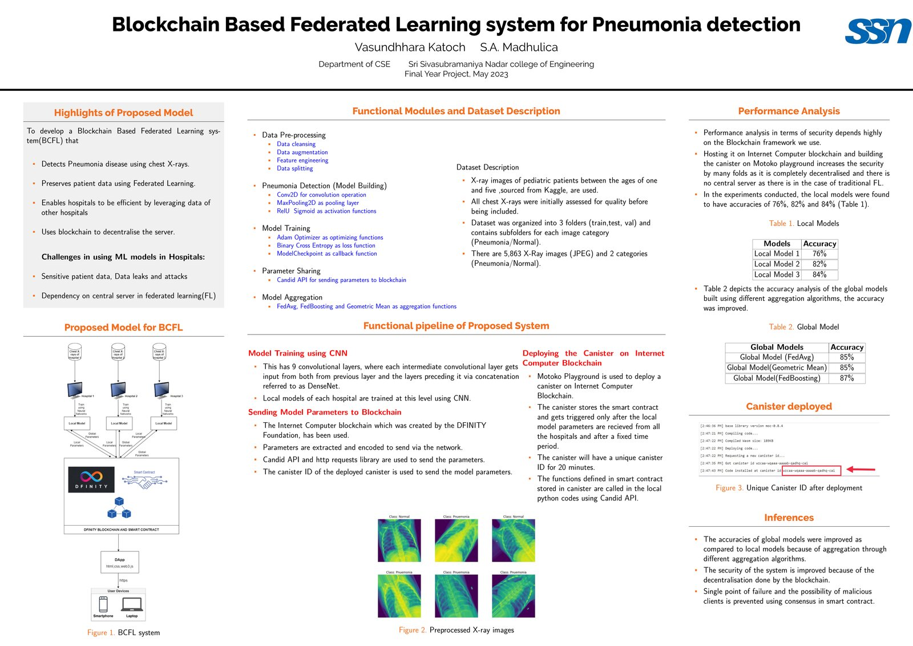

My undergraduate final year project — a federated learning system that removes the central aggregation server, the classic single point of trust and failure, and replaces it with a decentralized blockchain.
Federated learning lets many clients train a shared model on their own local data without ever sharing that data — only model updates get exchanged. But in the standard setup, a central server still has to aggregate everyone's updates, which means every client has to trust that one server. That server is also a single point of failure: if it's compromised, biased, or goes down, the whole system is at risk.
BCFL replaces the central server with a smart contract deployed on a decentralized blockchain, written in Motoko. Each client trains its model locally as usual, but instead of sending updates to a central authority, updates are submitted on-chain, where the aggregation logic runs transparently as part of the smart contract itself. No single party controls the aggregation step, and the process becomes auditable by design.
This was my way of exploring a question I still think about in my current AI work: how do you make ML systems trustworthy when you can't rely on a single central authority? Decentralizing the aggregation step is one answer — it trades a bit of complexity for removing a structural point of failure.
